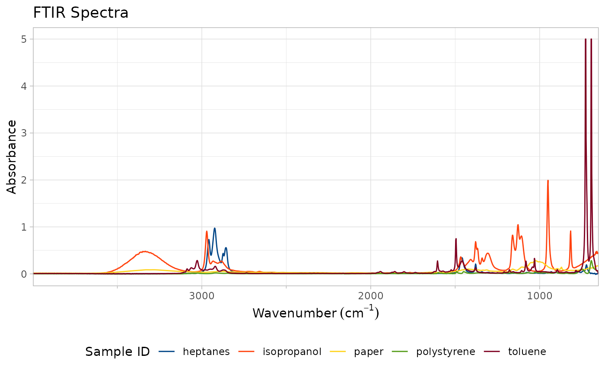

A shortcut to basic plot legend modifications. The plot legend can be moved to different locations, justifieid in those locations, and/or changed from vertical to horizontal. By default, legends are positioned with `position = "right"`, `justification = "center"`, and `direction = "vertical"`.
For more complex legend manipulation please perform using [ggplot::theme()] controls directly on the plot object. More information at [https://ggplot2.tidyverse.org/reference/theme.html](https://ggplot2.tidyverse.org/reference/theme.html#examples).
Un raccourci vers les modifications de base de la légende du tracé. La légende du tracé peut être déplacée à différents emplacements, justifiée à ces endroits et/ou modifiée de verticale à horizontale. Par défaut, les légendes sont positionnées avec `position = "right"`, `justification = "center"` et `direction = "vertical"`.
Pour une manipulation plus complexe de légende, veuillez utiliser les contrôles [ggplot::theme()] directement sur l'objet de tracé. Pour plus d'informations, voir [https://ggplot2.tidyverse.org/reference/theme.html](https://ggplot2.tidyverse.org/reference/theme.html#examples).
move_plot_legend(
ftir_spectra_plot,
position = NULL,
justification = NULL,
direction = NULL,
legend_title_position = NULL
)A plot generated by [plot_ftir()] or [plot_ftir_stacked()]. Un tracé généré par [plot_ftir()] ou [plot_ftir_stacked()].
Position for the legend. One of `"none"`, `"left"`, `"right"`, `"bottom"`, or `"top"`.
Position pour la légende. Un des `"none"`, `"left"`, `"right"`, `"bottom"`, ou `"top"`.
Justification for the legend. One of `"top"`, `"bottom"`, `"center"`, `"left"`, or `"right"`.
Justification de la légende. Un des `"top"`, `"bottom"`, `"center"`, `"left"`, ou `"right"`.
Direction for the legend. One of `"horizontal"` or `"vertical"`.
Direction de la légende. L'un des `"horizontal"` ou `"vertical"`.
A position for the legend title relative to the legend items. One of `"top"`, `"right"`, `"left"`, or `"bottom"`.
Une position pour le titre de la légende par rapport aux éléments de légende. Un des `"top"`, `"right"`, `"left"`, ou `"bottom"`.
the FTIR plot as a ggplot2 object, with legend relocated as required.
le tracé IRTF en tant qu'objet ggplot2, avec la légende déplacée si nécessaire
if (requireNamespace("ggplot2", quietly = TRUE)) {
# Generate a plot
p <- plot_ftir(sample_spectra)
# Move legend to bottom:
move_plot_legend(p, position = "bottom", direction = "horizontal")
}
